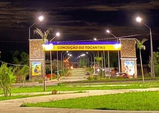

Seja bem vindos! - em nossa maravilhosa cidade...
Conceição do Tocantins faz parte do estado do Tocantins. Encontra-se a uma latitude 12º13′07" sul e a uma longitude 47º17′54" oeste, estando a uma altitude de 400 metros. A população avaliada em 2009 era de 4 495 habitantes. Possui uma área de 2.500,733km².